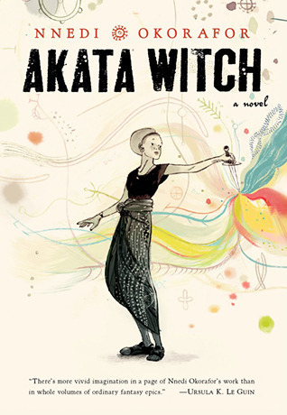

"Akata Witch"
- Read on 2022-06-27
- Rating: ️️️️️
- Format: 🎧 (8 hours 49 minutes)
It would be unfair to simply summarize this book as "African Harry Potter", but that gets people a good part of the way there. No indication is given for the main character to be the chosen one, but a youth learning about newly found magical abilities with some friends and some guidance (not a formal magic school). I really enjoyed the alternative cultural elements of this book. I thought Nnedi Okorafor, the author, did a really good job helping me feel familiar with the world and surroundings. This wasn't a particularly long book, so I could have used some more enrichment in the world building. I also thought there was some fake urgency in some of the matters, as well as having something WAY too weighty for youths to be undertaking. Any quibbles aside, I'll certainly be diving into the next book in this series.
- Prior: Sea of Poppies
- Next: Rethink Creativity